Bispectrum Tutorial¶
This tutorial demonstrates bispectrum analysis of Lightcurve data.
The bispectrum is an example of a Higher Order Spectrum (HOS). Where the power spectrum measures how variability power is distributed across frequencies, the bispectrum measures quadratic phase coupling between pairs of Fourier components — that is, whether the phases at frequencies \(f_1\), \(f_2\) and \(f_1+f_2\) are locked together. This makes it sensitive to non-linearity and non-Gaussianity that the power spectrum is completely blind to.
For \(m\) segments with Fourier transforms \(X_i(f)\), Stingray estimates the bispectrum directly from the Fourier components,
from which it also derives the bicoherence (a normalized measure of coupling strength between 0 and 1) and the biphase (the phase of the bispectrum). For detailed background see Maccarone (2013): https://arxiv.org/pdf/1308.3150
First we import the relevant classes.
[1]:
%matplotlib inline
import numpy as np
import matplotlib.pyplot as plt
from stingray import Lightcurve
from stingray.bispectrum import (
Bispectrum,
AveragedBispectrum,
CrossBispectrum,
AveragedCrossBispectrum,
DynamicalBispectrum,
DynamicalCrossBispectrum,
)
A first bispectrum¶
A Lightcurve can be built from an array of time stamps and an array of counts. We start with a short light curve to show the basic mechanics.
[2]:
times = np.arange(1, 11)
counts = np.array([2, 1, 3, 4, 2, 5, 1, 0, 2, 3])
lc = Lightcurve(times, counts)
[3]:
lc.plot(labels=['time', 'counts'])
[3]:
<Axes: xlabel='time', ylabel='counts'>
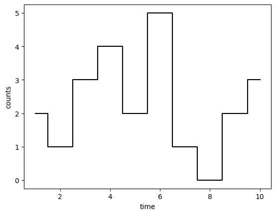
A Bispectrum is created directly from the light curve. The main parameters are:
data: the light curve (or anEventList, in which case adtis required).bicoherence_norm: which normalization to use for the bicoherence ("kim_powers"by default; more on this below).
A single Bispectrum treats the whole light curve as one segment.
[4]:
bs = Bispectrum(lc)
The results are held in a set of attributes. The most commonly used are:
freq— the positive Fourier frequencies the bispectrum is sampled on.bispec— the complex bispectrum, annf x nfmatrix.bispec_mag— its magnitude, \(|B(f_1, f_2)|\).biphase— the phase of the bispectrum (also available asbispec_phase).bicoherence— the normalized coupling strength.
The bispectrum is only defined where \(f_1 + f_2\) is a resolved frequency (at or below the Nyquist frequency); the redundant part of the plane is set to NaN.
[5]:
bs.freq
[5]:
array([0.1, 0.2, 0.3, 0.4])
[6]:
bs.bispec.shape
[6]:
(4, 4)
[7]:
bs.bispec_mag
[7]:
array([[104.24363358, 129.13985605, 110.3444497 , 58.43670762],
[129.13985605, 105.87350937, 84.72397065, nan],
[110.3444497 , 84.72397065, nan, nan],
[ 58.43670762, nan, nan, nan]])
[8]:
bs.biphase
[8]:
array([[1.10955024, 3.08726097, 0.64841299, 0.8879145 ],
[3.08726097, 2.62612372, 0.42677724, nan],
[0.64841299, 0.42677724, nan, nan],
[0.8879145 , nan, nan, nan]])
Plots¶
Bispectrum provides contour plots as a function of frequency for:
the bispectrum magnitude (
plot_mag),the biphase (
plot_phase),the bicoherence (
plot_bicoherence).
Each returns a Matplotlib Axes, so the plot can be customised or dropped into a larger figure.
[9]:
bs.plot_mag()
plt.show()
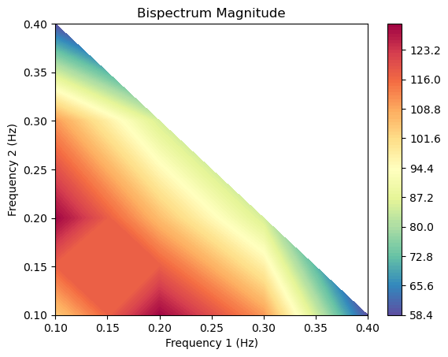
[10]:
bs.plot_phase()
plt.show()
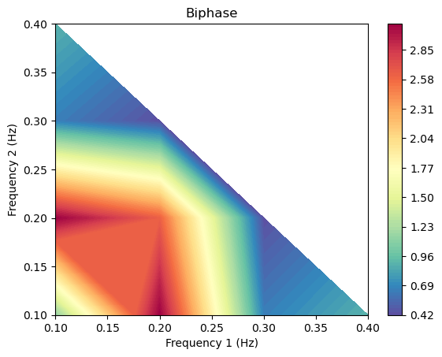
The cumulant method (indirect estimator)¶
Everything above uses the direct, or Fourier, estimator: Stingray Fourier-transforms each segment and averages the triple product \(B(f_1,f_2)=\langle X(f_1)\,X(f_2)\,X^{*}(f_1+f_2)\rangle\). There is an older, mathematically equivalent route to the same quantity — the indirect, or cumulant, method (Rao & Gabr 1984).
Rather than transforming first, the cumulant method works in the lag domain. It estimates the third-order cumulant of the mean-subtracted light curve,
and then takes its two-dimensional Fourier transform to obtain the bispectrum, \(B(f_1,f_2)=\mathcal{F}_2\{c_3\}\). The third-order cumulant is the higher-order analogue of the autocovariance — whose 1-D transform is the power spectrum — so this is simply the bispectral generalization of the Wiener–Khinchin theorem.
Select it with method="cumulant". Three extra parameters control the estimate:
maxlag— the largest lag \(|\tau|\) at which the cumulant is evaluated (defaults to \(N/2\)). It sets the frequency resolution and the size of the output grid, \((2\,\mathrm{maxlag}+1)^2\).window— an optional lag taper ("parzen","hamming","hanning", …) that down-weights the noisy high-lag cumulant estimates, trading resolution for lower variance;Noneapplies no taper.scale—"biased"(divide by \(N\)) or"unbiased"(divide by the number of overlapping samples at each lag).
Because it is built from a real cumulant, this estimator is auto-bispectrum only and returns no bicoherence, so bicoherence_norm, poisson_subtract and bias_subtract are ignored. It also samples the full signed \((f_1,f_2)\) grid rather than the positive Nyquist triangle of the Fourier estimator. The Fourier estimator method is the default method because it also yields the bicoherence and extends to the cross-, averaged- and dynamical-bispectrum classes. The
plot_cum3() method lets you inspect the cumulant itself.
[11]:
# The same light curve as the first bispectrum, now estimated via the 3rd-order cumulant
bs_cum = Bispectrum(lc, method="cumulant")
print("method :", bs_cum.method)
print("maxlag :", bs_cum.maxlag, "(defaults to N // 2)")
print("cum3 shape :", bs_cum.cum3.shape)
print("bispec :", bs_cum.bispec.shape, "-> full signed (f1, f2) grid")
print("bicoherence:", bs_cum.bicoherence, "(the cumulant method produces none)")
method : cumulant
maxlag : 5 (defaults to N // 2)
cum3 shape : (11, 11)
bispec : (11, 11) -> full signed (f1, f2) grid
bicoherence: None (the cumulant method produces none)
[12]:
# The 3rd-order cumulant in the lag domain -- the quantity that gets Fourier-transformed
bs_cum.plot_cum3()
plt.show()
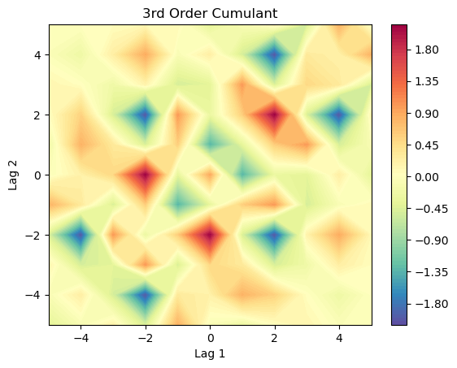
[13]:
# Its 2-D Fourier transform is the bispectrum magnitude (compare with plot_mag() above)
bs_cum.plot_mag()
plt.show()
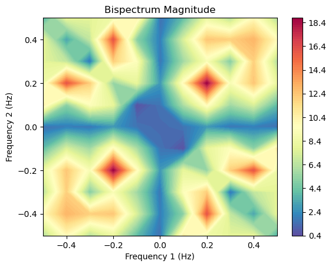
[14]:
# The bispectrum really is just the 2-D FFT of the cumulant:
recomputed = np.fft.fftshift(np.fft.fft2(np.fft.ifftshift(bs_cum.cum3)))
print("max |bispec - FFT2(cum3)| =", np.abs(bs_cum.bispec - recomputed).max())
max |bispec - FFT2(cum3)| = 7.105427357601002e-15
Averaging over segments¶
A single realization is noisy, and the bicoherence only becomes meaningful once several segments are averaged together. AveragedBispectrum splits the light curve into segments of length segment_size (in seconds), computes a bispectrum for each, and averages them.
As an example we build a longer light curve from a periodic, non-sinusoidal signal (a train of narrow pulses) buried in Poisson noise. Because the pulse shape is not a pure sine, its harmonics are phase-locked to the fundamental — exactly the kind of coupling the bicoherence reveals.
[15]:
rng = np.random.default_rng(0)
dt = 0.002 # seconds
exposure = 200.0 # seconds
f0 = 5.0 # pulse frequency, Hz
t = np.arange(0, exposure, dt)
# A narrow Gaussian pulse once per 1/f0 period -> phase-locked harmonics
phase = (t * f0) % 1.0
pulse = np.exp(-0.5 * ((phase - 0.5) / 0.03) ** 2)
rate = 200.0 * (0.2 + pulse)
counts = rng.poisson(rate * dt).astype(float)
lc = Lightcurve(t, counts, dt=dt, skip_checks=True)
lc.plot()
[15]:
<Axes: xlabel='Time (s)', ylabel='counts'>
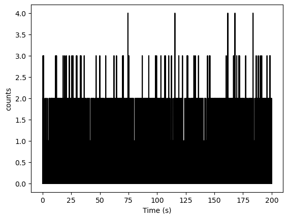
[16]:
bs = AveragedBispectrum(lc, segment_size=2.0)
bs.m
100it [00:00, 124.94it/s]
[16]:
100
m is the number of averaged segments. The bicoherence now clearly picks out the harmonic couplings — peaks appear at frequency pairs such as \((5, 5)\), \((5, 10)\) and \((10, 5)\) Hz, where two harmonics sum to a third.
[17]:
bs.plot_bicoherence()
plt.xlim(0, 30)
plt.ylim(0, 30)
plt.show()
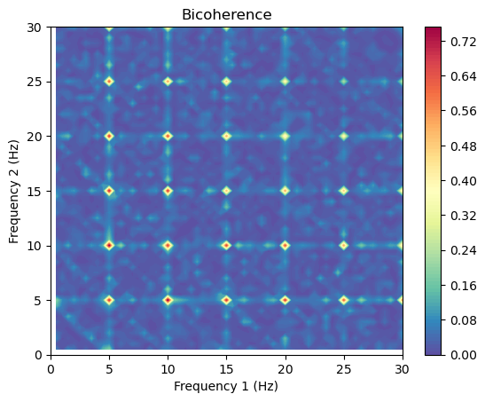
Detecting quadratic phase coupling¶
To see the diagnostic power of the bispectrum most clearly, we construct a signal with a single, controlled coupling: oscillations at \(f_1 = 8\) Hz and \(f_2 = 21\) Hz with independent random phases each segment, plus a third component at \(f_1 + f_2 = 29\) Hz whose phase is locked to the sum of the other two. The power spectrum cannot distinguish this from three independent tones, but the bispectrum can.
[18]:
rng = np.random.default_rng(42)
dt = 0.005
segment_size = 4.0
n_seg = 400
n_bin = int(segment_size / dt)
f1, f2 = 8.0, 21.0
tt = np.arange(n_bin) * dt
chunks = []
for _ in range(n_seg):
p1, p2 = rng.uniform(0, 2 * np.pi, size=2)
s = (
0.3 * np.cos(2 * np.pi * f1 * tt + p1)
+ 0.3 * np.cos(2 * np.pi * f2 * tt + p2)
+ 0.3 * np.cos(2 * np.pi * (f1 + f2) * tt + p1 + p2) # phase-coupled
)
chunks.append(rng.poisson(400.0 * (1 + s) * dt))
counts = np.concatenate(chunks).astype(float)
lc = Lightcurve(np.arange(counts.size) * dt, counts, dt=dt, skip_checks=True)
bs = AveragedBispectrum(lc, segment_size=segment_size)
bs.m
400it [00:01, 208.99it/s]
[18]:
400
[19]:
bs.plot_bicoherence()
plt.xlim(0, 40)
plt.ylim(0, 40)
plt.show()
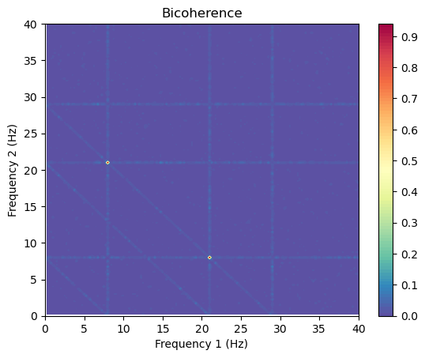
The bicoherence shows a sharp peak at \((8, 21)\) Hz (and its mirror image), isolating the coupling. We can read the value and the biphase off directly.
[20]:
i1 = np.argmin(np.abs(bs.freq - f1))
i2 = np.argmin(np.abs(bs.freq - f2))
print(f'bicoherence(8, 21 Hz) = {bs.bicoherence[i1, i2]:.3f}')
print(f'biphase(8, 21 Hz) = {bs.biphase[i1, i2]:+.3f} rad')
bicoherence(8, 21 Hz) = 0.931
biphase(8, 21 Hz) = -0.003 rad
The biphase is close to zero here because we coupled the third component with zero relative phase. The full biphase map is available too:
[21]:
bs.plot_phase()
plt.xlim(0, 40)
plt.ylim(0, 40)
plt.show()
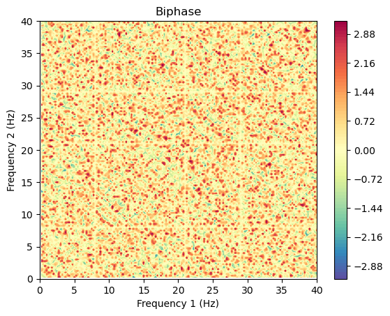
Bicoherence normalizations¶
Several conventions exist for normalizing the bicoherence, all bounded between 0 and 1. Stingray supports three, selectable through the bicoherence_norm argument:
"kim_powers"(default) — the squared bicoherence of Kim & Powers (1979)."sigl_chamoun"— Sigl & Chamoun (1994); the square root of the above."hagihira"— Hagihira (2001); normalized by the summed magnitude of the per-segment triple products.
You can pass the choice at construction time, e.g. AveragedBispectrum(lc, segment_size=4.0, bicoherence_norm="hagihira"), or switch between them afterwards with recompute_bicoherence, which reuses the already-computed Fourier sums.
[22]:
for norm in ['kim_powers', 'sigl_chamoun', 'hagihira']:
b = bs.recompute_bicoherence(norm)
print(f'{norm:14s} bicoherence(8, 21 Hz) = {b[i1, i2]:.3f}')
kim_powers bicoherence(8, 21 Hz) = 0.931
sigl_chamoun bicoherence(8, 21 Hz) = 0.965
hagihira bicoherence(8, 21 Hz) = 0.984
Correcting for Poisson noise¶
For photon-counting data the bispectrum is biased by Poisson noise. Because Poisson noise is non-linear it adds a real contribution to the bispectrum — and therefore to the biphase — even where there is no genuine coupling. Passing poisson_subtract=True removes this bias segment by segment, following Wirnitzer (1985):
where \(N\) is the number of photons in the segment. It is only appropriate for photon-counting (Poisson) light curves.
As a check, we build a light curve of pure Poisson noise — no coupling at all — and compare the mean real part of the bispectrum with and without the correction. Without it, the bispectrum carries a spurious real offset equal to the photon count \(N\); with it, that offset is removed.
[23]:
rng = np.random.default_rng(0)
dt = 0.01
segment_size = 2.0
n_bin = int(segment_size / dt)
n_seg = 500
# pure Poisson noise: constant rate, no variability
counts = rng.poisson(20, n_bin * n_seg).astype(float)
lc = Lightcurve(np.arange(counts.size) * dt, counts, dt=dt, skip_checks=True)
raw = AveragedBispectrum(lc, segment_size=segment_size)
corrected = AveragedBispectrum(lc, segment_size=segment_size, poisson_subtract=True)
valid = raw.valid
print(f'photons per segment (N) = {raw.nphots:.0f}')
print(f'mean Re(B), no correction = {np.nanmean(raw.bispec[valid].real):.0f}')
print(f'mean Re(B), Poisson-subtracted = {np.nanmean(corrected.bispec[valid].real):.1f}')
500it [00:00, 6973.68it/s]
500it [00:00, 5702.30it/s]
photons per segment (N) = 4000
mean Re(B), no correction = 3833
mean Re(B), Poisson-subtracted = -166.7
The uncorrected bispectrum sits at \(\sim N\), while the corrected one is consistent with zero. The same poisson_subtract=True option is available on every constructor (Bispectrum, AveragedBispectrum, and the from_* methods).
Jellyfish plots¶
A compact way to visualise the autobispectrum — the diagonal \(f_1 = f_2 = \nu\), which couples a frequency \(\nu\) to its harmonic \(2\nu\) — is the ‘jellyfish plot’ (Nathan et al. 2022). For each \(\nu\), the per-segment triple products \(X(\nu)\,X(\nu)\,X^{*}(2\nu)\) are summed segment by segment and the running total is drawn as a path in the complex plane, scaled so that the end point’s distance from the origin is the bicoherence and its angle is the biphase.
Phase-coupled frequencies contribute in a consistent direction, so their path marches outward into a ‘tentacle’; uncoupled frequencies random-walk near the origin, forming the ‘body’. Reference circles mark constant bicoherence.
The jellyfish plot needs the individual per-segment bispectra. It only ever uses the diagonal (\(f_1 = f_2\)), so the light option save_diagonal=True — which keeps just that diagonal — is all it needs (more on the memory saving below). Here we use a signal with a fundamental at 5 Hz and a phase-locked harmonic at 10 Hz (plus an uncoupled tone at 13 Hz as a control), and highlight the fundamental by passing f0.
[24]:
rng = np.random.default_rng(3)
dt = 0.01
segment_size = 4.0
n_seg = 400
n_bin = int(segment_size / dt)
t = np.arange(n_bin) * dt
f0 = 5.0
chunks = []
for _ in range(n_seg):
p = rng.uniform(0, 2 * np.pi)
jitter = rng.normal(0, 1.1) # weakens the phase locking a little
s = (
0.30 * np.cos(2 * np.pi * f0 * t + p)
+ 0.06 * np.cos(2 * np.pi * 2 * f0 * t + 2 * p + 0.6 + jitter) # harmonic
+ 0.20 * np.cos(2 * np.pi * 13.0 * t + rng.uniform(0, 2 * np.pi)) # uncoupled
)
chunks.append(rng.poisson(500 * (1 + s) * dt))
counts = np.concatenate(chunks).astype(float)
lc = Lightcurve(np.arange(counts.size) * dt, counts, dt=dt, skip_checks=True)
# save_diagonal=True keeps only the diagonal the jellyfish plot needs
bs = AveragedBispectrum(lc, segment_size=segment_size, save_diagonal=True)
400it [00:00, 1569.19it/s]
[25]:
bs.plot_jellyfish(f0=f0, bicoherence_levels=(0.05, 0.1, 0.2))
plt.xlim(-0.28, 0.28)
plt.ylim(-0.28, 0.28)
plt.show()
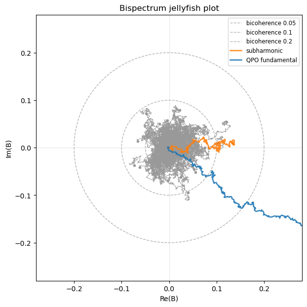
The 5 Hz fundamental reaches out into a clear tentacle — its coupling to the 10 Hz harmonic — while the uncoupled frequencies stay bunched in the body near the origin.
Lightweight vs heavy per-segment storage¶
There are two ways to keep the per-segment bispectra a jellyfish plot needs:
save_all=Truekeeps the full 2-D bispectrum of every segment — an \(n_f \times n_f\) complex matrix per segment, i.e. an \(m \times n_f \times n_f\) cube.save_diagonal=Truekeeps only the diagonal (\(f_1 = f_2\)) of each segment — an \(m \times n_f\) array.
Because the jellyfish is built purely from the autobispectrum diagonal, the two give identical plots — but the diagonal store is smaller by a factor of \(n_f\) (the number of frequencies), which for realistic segment lengths is hundreds to thousands. Building both here shows the difference:
[26]:
heavy = AveragedBispectrum(lc, segment_size=segment_size, save_all=True)
light = AveragedBispectrum(lc, segment_size=segment_size, save_diagonal=True)
heavy_store = np.asarray(heavy.bispec_all) # (m, nf, nf)
light_store = np.asarray(light.bispec_diagonal) # (m, nf)
nf = bs.freq.size
print(f'segments (m) = {heavy.m}')
print(f'frequencies (nf) = {nf}')
print(f'save_all store: {str(heavy_store.shape):16s} -> {heavy_store.nbytes/1e6:8.2f} MB')
print(f'save_diagonal store: {str(light_store.shape):16s} -> {light_store.nbytes/1e6:8.2f} MB')
print(f'memory reduction ~ nf = {heavy_store.nbytes / light_store.nbytes:.0f}x')
# the diagonal store is exactly the diagonal of the full cube ...
same_diag = np.allclose(light_store, heavy_store[:, np.arange(nf), np.arange(nf)])
print(f'diagonal matches full cube: {same_diag}')
400it [00:00, 1687.74it/s]
400it [00:00, 2288.91it/s]
segments (m) = 400
frequencies (nf) = 199
save_all store: (400, 199, 199) -> 253.45 MB
save_diagonal store: (400, 199) -> 1.27 MB
memory reduction ~ nf = 199x
diagonal matches full cube: True
So a jellyfish plot that would need a multi-gigabyte save_all cube for a long, finely sampled light curve needs only a few megabytes with save_diagonal=True — the recommended option unless you specifically need the full off-diagonal per-segment bispectra for something else.
Poisson subtraction in the jellyfish plot¶
The Poisson-noise bias adds a real offset to the bispectrum, which in a jellyfish plot pushes the ‘body’ of uncoupled frequencies off the origin toward positive \(\mathrm{Re}(B)\) and can drag a spurious tentacle out with it. Passing poisson_subtract=True removes it. The effect is largest at low count rates (the bias scales as \(\sim 1/\sqrt{N}\)), so we use a fainter light curve here and plot the jellyfish with and without the correction. Note we can afford many segments cheaply
because save_diagonal=True keeps the per-segment store tiny.
[27]:
rng = np.random.default_rng(5)
dt = 0.01
segment_size = 4.0
n_seg = 700
n_bin = int(segment_size / dt)
t = np.arange(n_bin) * dt
f0 = 5.0
chunks = []
for _ in range(n_seg):
p = rng.uniform(0, 2 * np.pi)
jitter = rng.normal(0, 0.7)
s = (
0.6 * np.cos(2 * np.pi * f0 * t + p)
+ 0.3 * np.cos(2 * np.pi * 2 * f0 * t + 2 * p + 0.6 + jitter) # harmonic
+ 0.3 * np.cos(2 * np.pi * 13.0 * t + rng.uniform(0, 2 * np.pi)) # uncoupled
)
chunks.append(rng.poisson(np.clip(0.30 * (1 + s), 0, None))) # ~0.3 counts/bin -> low N
counts = np.concatenate(chunks).astype(float)
lc = Lightcurve(np.arange(counts.size) * dt, counts, dt=dt, skip_checks=True)
raw = AveragedBispectrum(lc, segment_size=segment_size, save_diagonal=True)
corrected = AveragedBispectrum(
lc, segment_size=segment_size, save_diagonal=True, poisson_subtract=True
)
print(f'photons per segment (N) = {raw.nphots:.0f} -> 1/sqrt(N) = {1/np.sqrt(raw.nphots):.3f}')
700it [00:00, 2007.07it/s]
700it [00:00, 1874.25it/s]
photons per segment (N) = 120 -> 1/sqrt(N) = 0.091
[28]:
fig, axes = plt.subplots(1, 2, figsize=(12, 6), sharex=True, sharey=True)
raw.plot_jellyfish(f0=f0, bicoherence_levels=(0.05, 0.1, 0.2), ax=axes[0])
corrected.plot_jellyfish(f0=f0, bicoherence_levels=(0.05, 0.1, 0.2), ax=axes[1])
axes[0].set_title('No Poisson subtraction')
axes[1].set_title('Poisson-subtracted')
for a in axes:
a.set_xlim(-0.25, 0.35)
a.set_ylim(-0.3, 0.3)
plt.show()
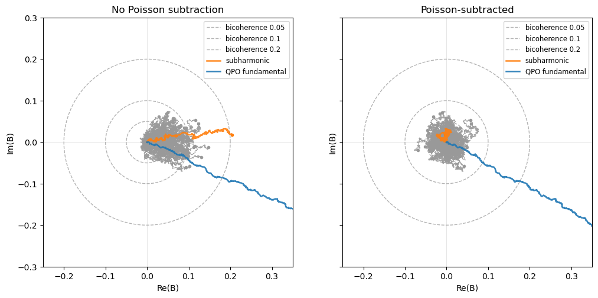
Without the correction (left), the body of uncoupled frequencies is pushed to positive \(\mathrm{Re}(B)\) by the Poisson bias, and the subharmonic is dragged out with it. With poisson_subtract=True (right), the body re-centers on the origin and the spurious subharmonic collapses, while the genuine 5 Hz fundamental tentacle is preserved.
Cross-bispectrum¶
So far every bispectrum has been an auto-bispectrum — coupling within a single light curve. The cross-bispectrum is the higher-order analogue of the cross spectrum: it measures quadratic phase coupling between channels (usually two energy bands),
with the three factors drawn from up to three simultaneous light curves. The Bispectrum is the special case \(X = Y = Z\), just as the power spectrum is the auto case of the cross spectrum. CrossBispectrum and AveragedCrossBispectrum take up to three inputs (data1, data2, data3); the missing ones default to data1.
Because \(X(f_1)\,Y(f_2)\) is not symmetric under \(f_1 \leftrightarrow f_2\) in general, the cross-bispectrum is sampled on the full signed frequency plane (positive and negative \(f_1\), \(f_2\)), not just the positive triangle.
As a demonstration we build two simultaneous bands: band A carries oscillations at \(f_1 = 5\) Hz and \(f_2 = 12\) Hz (random phases each segment), and band B carries the sum frequency 17 Hz, either phase-locked to band A (coupled) or with an independent phase (control). The cross-bispectrum with \(X = A(f_1)\), \(Y = A(f_2)\), \(Z = B(f_1+f_2)\) should light up at \((5, 12)\) Hz only when the bands are coupled.
[29]:
rng = np.random.default_rng(7)
dt = 0.01
segment_size = 4.0
n_seg = 400
n_bin = int(segment_size / dt)
t = np.arange(n_bin) * dt
f1, f2 = 5.0, 12.0
def two_bands(couple):
ca, cb = [], []
for _ in range(n_seg):
p1, p2 = rng.uniform(0, 2 * np.pi, size=2)
a = 0.5 * np.cos(2 * np.pi * f1 * t + p1) + 0.5 * np.cos(2 * np.pi * f2 * t + p2)
pb = (p1 + p2) if couple else rng.uniform(0, 2 * np.pi) # locked or free
b = 0.5 * np.cos(2 * np.pi * (f1 + f2) * t + pb)
ca.append(rng.poisson(np.clip(500 * (1 + a), 0, None) * dt))
cb.append(rng.poisson(np.clip(500 * (1 + b), 0, None) * dt))
a = np.concatenate(ca).astype(float)
b = np.concatenate(cb).astype(float)
lca = Lightcurve(np.arange(a.size) * dt, a, dt=dt, skip_checks=True)
lcb = Lightcurve(np.arange(b.size) * dt, b, dt=dt, skip_checks=True)
return lca, lcb
lcA_c, lcB_c = two_bands(couple=True)
lcA_u, lcB_u = two_bands(couple=False)
# X = A(f1), Y = A(f2), Z = B(f1+f2)
xbs_coupled = AveragedCrossBispectrum(
lcA_c, lcA_c, lcB_c, segment_size=segment_size, bicoherence_norm='sigl_chamoun'
)
xbs_control = AveragedCrossBispectrum(
lcA_u, lcA_u, lcB_u, segment_size=segment_size, bicoherence_norm='sigl_chamoun'
)
i1 = np.argmin(np.abs(xbs_coupled.freq - f1))
i2 = np.argmin(np.abs(xbs_coupled.freq - f2))
print(f'cross-bicoherence(5, 12 Hz), coupled = {xbs_coupled.bicoherence[i1, i2]:.3f}')
print(f'cross-bicoherence(5, 12 Hz), control = {xbs_control.bicoherence[i1, i2]:.3f}')
400it [00:00, 478.98it/s]
400it [00:00, 451.13it/s]
cross-bicoherence(5, 12 Hz), coupled = 0.988
cross-bicoherence(5, 12 Hz), control = 0.018
[30]:
fig, axes = plt.subplots(1, 2, figsize=(13, 5.5), sharex=True, sharey=True)
xbs_coupled.plot_bicoherence(ax=axes[0])
xbs_control.plot_bicoherence(ax=axes[1])
axes[0].set_title('Coupled bands')
axes[1].set_title('Independent bands')
for a in axes:
a.set_xlim(-25, 25)
a.set_ylim(-25, 25)
plt.show()
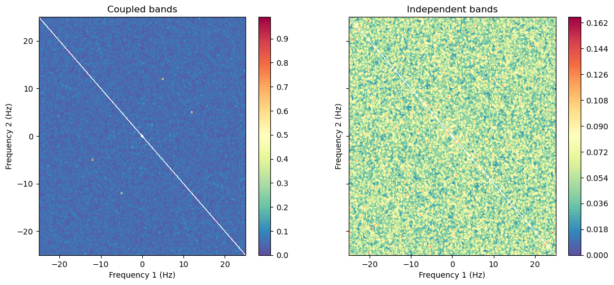
The coupling stands out at \((5, 12)\) Hz (and its symmetry-related points) in the left panel and is absent on the right — even though the two datasets have the same per-band power spectra. Note the axes now span negative and positive frequencies: the signed domain of the cross-bispectrum.
For photon-counting data the cross-bispectrum of independent bands is unbiased by Poisson noise (the noise is uncorrelated between detectors), so no correction is needed; the poisson_subtract / channels_overlap options apply only when the channels share photons.
When all three channels differ¶
In the example above \(X\) and \(Y\) were the same band (band A), so \(X(f_1)\,Y(f_2) = A(f_1)\,A(f_2)\) is still symmetric under \(f_1 \leftrightarrow f_2\) and the coupling appears at both \((5, 12)\) and \((12, 5)\) Hz. The cross-bispectrum only becomes genuinely asymmetric when the three factors are drawn from three different signals.
To see this we build three separate bands in the same segments: \(X\) at \(f_1 = 5\) Hz and \(Y\) at \(f_2 = 12\) Hz, each with an independent random phase per segment, and \(Z\) at the sum \(17\) Hz whose phase is locked to \(p_1 + p_2\). Now the coupling lives specifically at \((f_1, f_2) = (5, 12)\): at the swapped point \((12, 5)\) the estimator asks for \(X(12\,\mathrm{Hz})\) and \(Y(5\,\mathrm{Hz})\), but \(X\) has no power at 12 Hz and \(Y\) none at 5 Hz, so nothing lights up there.
[31]:
rng = np.random.default_rng(11)
fX, fY = 5.0, 12.0
fZ = fX + fY # 17 Hz
cX, cY, cZ = [], [], []
for _ in range(n_seg):
p1, p2 = rng.uniform(0, 2 * np.pi, size=2)
x = 0.5 * np.cos(2 * np.pi * fX * t + p1)
y = 0.5 * np.cos(2 * np.pi * fY * t + p2)
z = 0.5 * np.cos(2 * np.pi * fZ * t + (p1 + p2)) # locked to X and Y
cX.append(rng.poisson(np.clip(500 * (1 + x), 0, None) * dt))
cY.append(rng.poisson(np.clip(500 * (1 + y), 0, None) * dt))
cZ.append(rng.poisson(np.clip(500 * (1 + z), 0, None) * dt))
X = np.concatenate(cX).astype(float)
Y = np.concatenate(cY).astype(float)
Z = np.concatenate(cZ).astype(float)
lcX = Lightcurve(np.arange(X.size) * dt, X, dt=dt, skip_checks=True)
lcY = Lightcurve(np.arange(Y.size) * dt, Y, dt=dt, skip_checks=True)
lcZ = Lightcurve(np.arange(Z.size) * dt, Z, dt=dt, skip_checks=True)
# X = X(f1), Y = Y(f2), Z = Z(f1+f2) -- three distinct channels
xbs = AveragedCrossBispectrum(
lcX, lcY, lcZ, segment_size=segment_size, bicoherence_norm='sigl_chamoun'
)
iX = np.argmin(np.abs(xbs.freq - fX))
iY = np.argmin(np.abs(xbs.freq - fY))
print(f'cross-bicoherence(f1=5, f2=12 Hz) = {xbs.bicoherence[iX, iY]:.3f}')
print(f'cross-bicoherence(f1=12, f2=5 Hz) = {xbs.bicoherence[iY, iX]:.3f}')
400it [00:00, 404.45it/s]
cross-bicoherence(f1=5, f2=12 Hz) = 0.988
cross-bicoherence(f1=12, f2=5 Hz) = 0.047
[32]:
fig, ax = plt.subplots(figsize=(6.5, 5.5))
xbs.plot_bicoherence(ax=ax)
ax.plot(
[fX, -fX], [fY, -fY], 'o', mfc='none', mec='cyan', ms=15, mew=2,
label='(f1, f2) = (5, 12): coupled',
)
ax.plot(
[fY, -fY], [fX, -fX], 's', mfc='none', mec='white', ms=15, mew=2,
label='(f1, f2) = (12, 5): absent',
)
ax.set_xlim(-25, 25)
ax.set_ylim(-25, 25)
ax.legend(loc='upper left', fontsize=8)
plt.show()
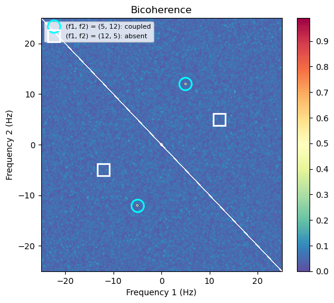
The bright spot sits at \((5, 12)\) Hz (cyan circle) but the swapped point \((12, 5)\) Hz (white square) is dark — the cross-bicoherence is no longer symmetric across the \(f_1 = f_2\) diagonal. The only symmetry left is the reality relation \(B(-f_1, -f_2) = B^{*}(f_1, f_2)\), which mirrors the coupling to \((-5, -12)\) Hz (with the biphase conjugated) but does not reflect it across the diagonal. That is exactly why the auto-bispectrum’s positive triangle is no longer enough: with the \(f_1 \leftrightarrow f_2\) symmetry gone, the full signed plane carries independent information and cannot be folded away.
Dynamical bispectrum¶
Just as a DynamicalPowerspectrum tracks how power moves across frequency over time, a DynamicalBispectrum tracks how quadratic phase coupling evolves. There is one important difference from the power case. A power spectrum from a single segment is already a valid (if noisy) estimate, so the dynamical power spectrum can use one segment per time bin. A bicoherence from a single segment is identically 1 and carries no information — it only becomes meaningful once several segments are
averaged. So the dynamical bispectrum needs two time scales:
segment_size— the FFT length, which setsdfand the Nyquist frequency;bin_size— the length of each dynamical row, an integer multiple ofsegment_size. Each row averagesbin_size / segment_sizesegments.
The bicoherence bias floor is \(\sim 1/\sqrt{m}\) with \(m\) segments per bin, so the code warns you if a bin holds fewer than about ten.
Each time bin holds a whole 2-D \((f_1, f_2)\) map, so the object is a 3-D cube. By default only the \(f_1 = f_2\) diagonal is kept (store="diagonal"), which is enough for the diagonal and trace views below and is much lighter; pass store="full" to keep the whole cube (needed for the slice, frame and montage plots).
As a demonstration we build a light curve with a persistent harmonic coupling at \(\nu = 4\) Hz (so \(4 + 4 \to 8\) Hz, on the diagonal) and an off-diagonal coupling \(5 + 12 \to 17\) Hz that switches on only in the middle of the observation.
[33]:
rng = np.random.default_rng(3)
dt = 0.01
segment_size = 2.0
bin_size = 80.0
n_bin = int(segment_size / dt)
t = np.arange(n_bin) * dt
n_blocks = 10
seg_per_block = int(bin_size / segment_size) # 40 segments per time bin
coupled = [b in (3, 4, 5, 6) for b in range(n_blocks)] # (5,12) on mid-observation
flux = []
for b in range(n_blocks):
for _ in range(seg_per_block):
pa = rng.uniform(0, 2 * np.pi)
p1, p2 = rng.uniform(0, 2 * np.pi, size=2)
# harmonic 4 -> 8 Hz, phase-locked throughout (diagonal coupling)
s = 0.5 * np.cos(2 * np.pi * 4 * t + pa) + 0.5 * np.cos(2 * np.pi * 8 * t + 2 * pa)
# off-diagonal triad 5, 12 -> 17 Hz
s += 0.5 * np.cos(2 * np.pi * 5 * t + p1) + 0.5 * np.cos(2 * np.pi * 12 * t + p2)
p3 = (p1 + p2) if coupled[b] else rng.uniform(0, 2 * np.pi)
s += 0.5 * np.cos(2 * np.pi * 17 * t + p3)
flux.append(rng.poisson(np.clip(500 * (1 + s), 0, None) * dt))
counts = np.concatenate(flux).astype(float)
lc = Lightcurve(np.arange(counts.size) * dt, counts, dt=dt, skip_checks=True)
[34]:
dyn = DynamicalBispectrum(
lc, segment_size=segment_size, bin_size=bin_size,
store='full', bicoherence_norm='sigl_chamoun',
)
print('frequencies:', dyn.freq.size, ' time bins:', dyn.time.size)
print(f'dt (bin_size) = {dyn.dt} s; df = {dyn.df:.3f} Hz; segments per bin m = {dyn.m}')
frequencies: 99 time bins: 10
dt (bin_size) = 80.0 s; df = 0.500 Hz; segments per bin m = 40
Diagonal view¶
plot_diagonal shows the diagonal bicoherence \(b(\nu, \nu, t)\) — the closest analogue of the dynamical power spectrum, where each \(\nu\) couples to its harmonic \(2\nu\). The persistent harmonic coupling shows up as a steady bright band at \(\nu = 4\) Hz across the whole observation.
[35]:
fig, ax = plt.subplots(figsize=(8, 4))
dyn.plot_diagonal(ax=ax)
ax.set_ylim(0, 20)
plt.show()
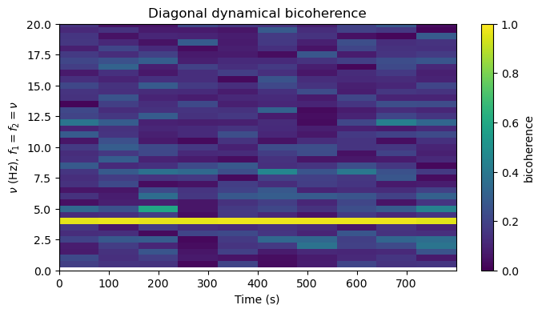
Tracing a fixed coupling¶
The off-diagonal \((5, 12)\) coupling is not on the diagonal, so to watch it we trace a fixed frequency pair. plot_trace shows the bicoherence and biphase at \((f_1, f_2)\) as a function of time; the coupling rises from the \(1/\sqrt{m}\) noise floor to \(\approx 1\) during the middle bins and falls back, while the biphase is only well-defined (and near \(0\)) while the coupling is on.
[36]:
dyn.plot_trace(5, 12)
plt.show()
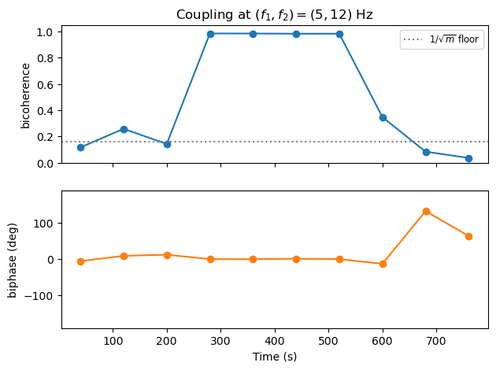
Fixed-\(f_1\) slice, single frames and montages¶
With store="full" the whole \((f_1, f_2)\) map is available in every bin, so we can also fix one frequency and watch the rest evolve (plot_slice), draw the full map at one time (plot_frame), or lay out a grid of maps over time (plot_montage). The slice at \(f_1 = 5\) Hz lights up at \(f_2 = 12\) Hz exactly when the coupling switches on.
[37]:
fig, ax = plt.subplots(figsize=(8, 4))
dyn.plot_slice(5.0, ax=ax)
ax.set_ylim(0, 25)
plt.show()
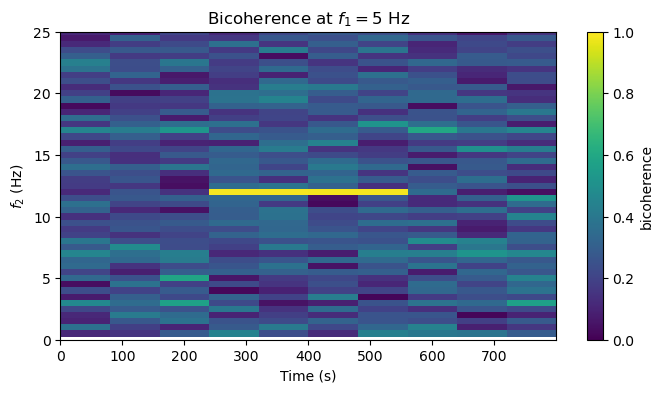
[38]:
dyn.plot_montage()
plt.show()
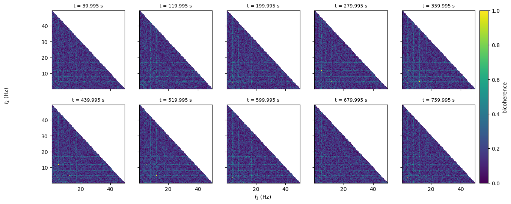
Rebinning and tracking a drifting feature¶
Because the dynamical bispectrum stores the additive per-bin sums rather than the finished bicoherence, it can be re-combined correctly after the fact: rebin_time and rebin_frequency sum the stored quantities over coarser bins and recompute the bicoherence (averaging the bicoherence directly would be wrong, since it is a ratio). trace_maximum returns the peak-bicoherence frequency in each bin.
The shift_and_add method is for a coupling whose frequency drifts over the observation — a wandering QPO, say. Averaging the whole observation together smears the feature across many frequency bins; instead we track its frequency \(f_0(t)\) and shift each bin so \(f_0\) lands on a common reference before co-adding. Here we build a harmonic pair whose fundamental drifts from \(4\) to \(6\) Hz, track it with trace_maximum, and compare the naive whole-observation average
with the shifted-and-added one.
[39]:
rng2 = np.random.default_rng(8)
f0_true = np.linspace(4.0, 6.0, n_blocks) # fundamental drifts across the observation
flux2 = []
for b in range(n_blocks):
f0 = f0_true[b]
for _ in range(seg_per_block):
pa = rng2.uniform(0, 2 * np.pi)
s = 0.5 * np.cos(2 * np.pi * f0 * t + pa) + 0.5 * np.cos(2 * np.pi * 2 * f0 * t + 2 * pa)
flux2.append(rng2.poisson(np.clip(500 * (1 + s), 0, None) * dt))
counts2 = np.concatenate(flux2).astype(float)
lc2 = Lightcurve(np.arange(counts2.size) * dt, counts2, dt=dt, skip_checks=True)
# diagonal store (the default) is all shift_and_add needs
dynd = DynamicalBispectrum(
lc2, segment_size=segment_size, bin_size=bin_size, bicoherence_norm='sigl_chamoun'
)
# track the drifting fundamental, then shift-and-add to it
f0_track = dynd.freq[dynd.trace_maximum(min_freq=2, max_freq=10)]
rel_freq, bic_aligned, _ = dynd.shift_and_add(f0_track)
# naive comparison: average the whole observation without aligning
whole = AveragedBispectrum(lc2, segment_size=segment_size, bicoherence_norm='sigl_chamoun')
bic_naive = np.diag(whole.bicoherence)
print('tracked f0 per bin:', np.round(f0_track, 1))
400it [00:00, 7188.83it/s]
tracked f0 per bin: [4. 4. 4.5 4.5 5. 5. 5.5 5.5 6. 6. ]
[40]:
fig, axes = plt.subplots(1, 2, figsize=(11, 4), sharey=True)
axes[0].plot(whole.freq, bic_naive)
axes[0].set_xlim(0, 12)
axes[0].set_xlabel('frequency (Hz)')
axes[0].set_ylabel('diagonal bicoherence')
axes[0].set_title('Whole-observation average\n(drift smears the coupling)')
axes[1].plot(rel_freq, bic_aligned)
axes[1].set_xlim(-4, 4)
axes[1].set_xlabel(r'frequency $-\ f_0$ (Hz)')
axes[1].set_title('Shift-and-add\n(aligned to the drifting $f_0$)')
plt.show()
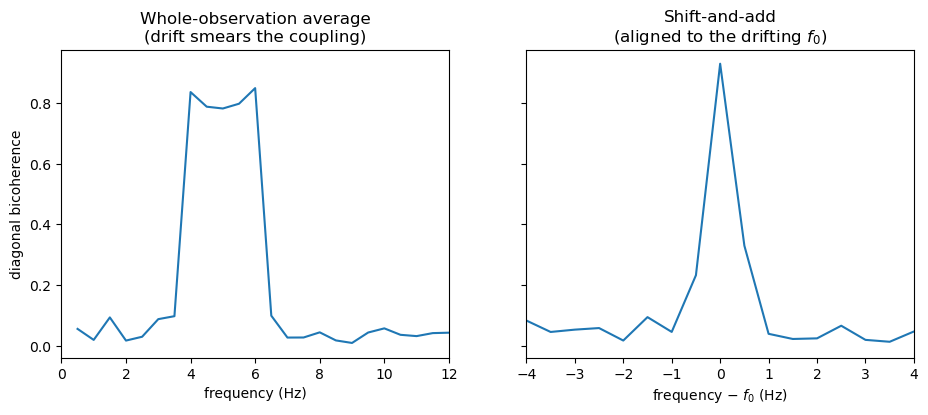
The whole-observation average spreads the coupling across the entire \(4\)–\(6\) Hz drift range, whereas shift-and-add concentrates it into a single sharp peak at zero relative frequency — recovering a well-defined coupling frequency and biphase, and lifting the signal clear of the surrounding noise.
Dynamical cross-bispectrum¶
DynamicalCrossBispectrum is the time-resolved cross case — three channels, on the full signed frequency plane — and shares all the same plotting, rebinning and tracking methods. Here three separate bands carry \(5\), \(12\) and \(17\) Hz with the sum phase-locked throughout, and we trace the cross-bicoherence at \((5, 12)\) Hz.
[41]:
rng3 = np.random.default_rng(5)
X, Y, Z = [], [], []
for b in range(n_blocks):
for _ in range(seg_per_block):
p1, p2 = rng3.uniform(0, 2 * np.pi, size=2)
X.append(rng3.poisson(np.clip(500 * (1 + 0.5 * np.cos(2 * np.pi * 5 * t + p1)), 0, None) * dt))
Y.append(rng3.poisson(np.clip(500 * (1 + 0.5 * np.cos(2 * np.pi * 12 * t + p2)), 0, None) * dt))
Z.append(rng3.poisson(np.clip(500 * (1 + 0.5 * np.cos(2 * np.pi * 17 * t + p1 + p2)), 0, None) * dt))
lcX = Lightcurve(np.arange(np.concatenate(X).size) * dt, np.concatenate(X).astype(float), dt=dt, skip_checks=True)
lcY = Lightcurve(lcX.time, np.concatenate(Y).astype(float), dt=dt, skip_checks=True)
lcZ = Lightcurve(lcX.time, np.concatenate(Z).astype(float), dt=dt, skip_checks=True)
xdyn = DynamicalCrossBispectrum(
lcX, lcY, lcZ, segment_size=segment_size, bin_size=bin_size,
store='full', bicoherence_norm='sigl_chamoun',
)
_, bic_xt, _ = xdyn.trace(5, 12)
print('cross-bicoherence(5, 12 Hz) per time bin:', np.round(bic_xt, 2))
cross-bicoherence(5, 12 Hz) per time bin: [0.97 0.98 0.98 0.98 0.97 0.98 0.98 0.98 0.98 0.98]
Testing with real data¶
In this example, we will work with an RXTE observation of GRS 1915+105. The obsid is 91701-01-55-00. The reduced data for use in this tutorial can be found here. We are only looking at one orbit of three for this example.
[42]:
# Read in the flux and errors the data
data = np.loadtxt("grs1915_data.txt")
times = data[:, 0]
counts = data[:, 1] * 0.0078125 #converting to counts/bin as Stingray expects
lc = Lightcurve(times, counts)
ct = lc.counts
t = lc.time
err = np.sqrt(ct)
dt = lc.dt
#Check that everything is as expected
print('Time resolution is', dt, 'seconds')
print('Length of light curve is', len(ct))
Time resolution is 0.0078125 seconds
Length of light curve is 409472
/Users/benr/projects/stingray_software/stingray/stingray/utils.py:492: UserWarning: SIMON says: Bin sizes in input time array aren't equal throughout! This could cause problems with Fourier transforms. Please make the input time evenly sampled.Only use with LombScargleCrossspectrum, LombScarglePowerspectrum and QPO using GPResult
warnings.warn("SIMON says: {0}".format(message), **kwargs)
[43]:
# Plot the light curve
plt.figure(figsize=[12,6])
plt.errorbar(t, ct, yerr=err,
color='purple', ecolor='0.8', alpha=0.5, capsize=2.0)
plt.title('GRS 1915+105 (RXTE)', fontsize=14)
plt.ylabel('Count rate', fontsize=14)
plt.xlabel('Time [seconds]', fontsize=14)
plt.show()
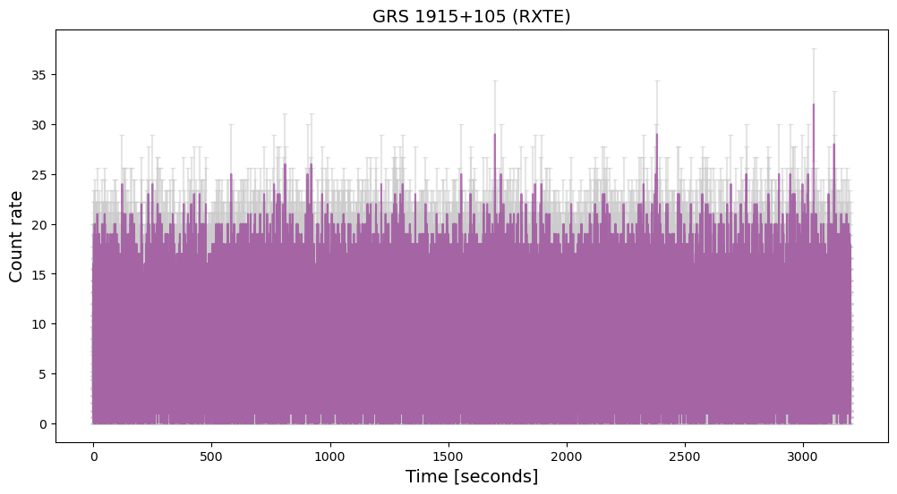
[44]:
# Make averaged power spectrum using 16s segments
from stingray import AveragedPowerspectrum
avg_ps = AveragedPowerspectrum.from_lightcurve(lc, 16., norm="leahy")
print("Number of segments: %d" % avg_ps.m)
199it [00:00, 38966.69it/s]
Number of segments: 199
[45]:
####Plot power spectrum
plt.loglog(avg_ps.freq, avg_ps.power)
plt.title("Power Spectrum")
# plt.xlim([4e-2,7e1])
# plt.ylim([1,150])
plt.xlabel("Frequency (Hz)")
plt.ylabel("Power (Leahy Normalised)")
plt.show()
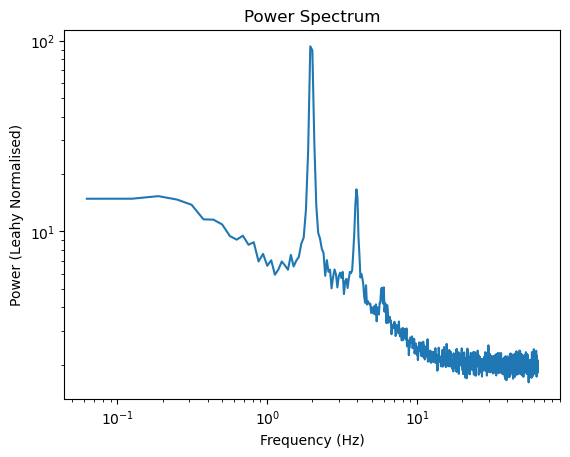
[46]:
#Calculate bispectrum
bs = AveragedBispectrum(lc, segment_size=16.0)
bs.m
199it [00:05, 35.32it/s]
[46]:
199
[47]:
bs.plot_bicoherence()
plt.xlim(0, 20)
plt.ylim(0, 20)
plt.show()
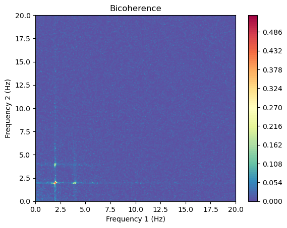
[48]:
# Get the biphase value at the f1=f2=2Hz region
f1 = 2.
f2 = 2.
i1 = np.argmin(np.abs(bs.freq - f1))
i2 = np.argmin(np.abs(bs.freq - f2))
print(f'bicoherence(2, 2 Hz) = {bs.bicoherence[i1, i2]:.3f}')
print(f'biphase(2, 2 Hz) = {bs.biphase[i1, i2]:+.3f} rad')
bicoherence(2, 2 Hz) = 0.351
biphase(2, 2 Hz) = +1.885 rad